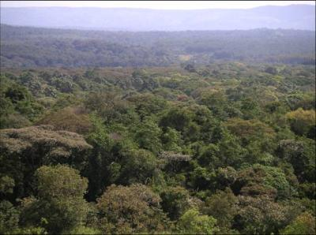

.jpg)
f8c2.jpg?width=500&height=500&iframe=true){kind=link}
Geographical Distribution of Ocimum kilimandscharicum in Africa
General Information and Agronomic Aspects
Ocimum kilimandscharicum is one of the species of the genus Ocimum plant that is native in East Africa and was introduced and cultivated in India and some parts of Turkey. It is an evergreen aromatic perennial under shrub belonging to the Lamiaceae family. It thrives as a natural rounded woody shrub that can reach 2 m high in warm temperate regions of the tropics but can be propagated both by seeds and vegetatively.
The plant has pubescent quadrangular branchlets with simple leaves that are opposite and oblong, narrow at the base and deeply serrated (Warrier, et.al., 1996). The leaves contain aromatic oils, which is the essence of the plant. The essential oil is extracted using distillation, expression or solvent extraction methods. The oil constitutes liquid oil and white solid crystals, where the pure crystals possess a characteristic odour and taste of natural Camphor.
Agronomic aspects
- O.kilimandscharicum can be propagated by seeds and cuttings.
- Farmer experience indicates that seed propagation is the most suitable.
- O.kilimandscharicum seeds are black and very small, oval shaped and about 1mm in the middle and 2mm long.
- Seedlings are raised in nurseries and transplanted on the farms.
- Once the shrub is established, it can be harvested 3 times per annum for more than three years.
- It requires well-drained soils, though does well in clayey and sandy soils, with an average annual rainfall of 1250 mm, fairly high temperatures and at altitudes of up to 900 mm (Wealth of India, 1966).
- The plant is not grazed or browsed by animals.
- It has an efficient rooting system and perennial habits which prevent soil erosion where it is grown.
- During growth, the plant requires little management in the field thus it is not labour intensive.
- However, harvesting is slightly labour intensive where cutting and plucking of leaves can be tedious.
1. Establishing an O. kilimandscharicum seedbed nursery
- Seedlings are raised in seedbeds and these are prepared using specific equipment that depends on the land characteristics.
- Seedbeds can be prepared in nurseries at farmer or CBO level.
- The nursery should be prepared by observing hygienic and careful seedling production that involves seed selection, site selection, tillage and seed propagation.
a) Seed selection and preparation
- Ocimum kilimandscharicum seeds are collected from mature plants.
- The seed is prepared hygienically by drying under shade, threshing, winnowing and storing.
- Records are kept of the region where the seed is obtained so that it is easy to trace their origin.
b) Site selection
The site selected for raising a nursery should be convenient enough to:
- Minimise any possible damage to the seeds or seedlings.
- Be easily accessed.
- Have windbreaks or trees that provide shade and protection.
The site should be free from contamination and too much manure.
c) Land preparation
- The seedbed should be prepared properly to produce a suitable medium for seedling germination, establishment and growth;
- It should be firm and smooth;
- The land is prepared in two successive stages that are primary and secondary tillage;
Primary tillage
- This is undertaken to break-up the soil compaction, loosen the size of the soil clods and invert plant residues to decompose them.
- The soil moisture should be sufficient enough so that it crumbles when worked by farm implements.
- The selected site should be cleared to free the land from previous crops and other vegetation.
- Mark out the size of the nursery required on the land.
- Using hoes as tillage implements, prepare the marked land by digging and cross digging.
- Shake the soil from any plant roots, tree stumps and other vegetation matter.
- Leave the land for a few days to allow the waste vegetation to rot.
Secondary tillage
- This is undertaken to remove all kinds of waste materials on the tilled land, level it properly and prepare beds for plant propagation.
- Using forked hoes as tillage implements, prepare the tilled land by cross digging to remove all wastes.
- Raised seedbeds are constructed measuring 1 m wide and of any convenient length;
- Use the implement to establish smoothness on the seedbeds land.
- Before sowing, amend the soil by incorporating compost manure with the top layer of the soil.
- Level the soil using a rake.
d) Sowing the O.kilimandscharicum seeds in the seedbed
- Because of their size, the O.kilimandscharicum seeds cannot be sown directly to the soil.
- Take dry soil and work it into a powder.
- Mix dry clean seeds with dry powdered soil.
- Using the edge of a board or the back of a rake, make shallow furrows or drills or 'valleys' in the seedbed at a spacing of 150 mm.
- Sow the mixed seeds uniformly in the drills.
- Do not cover with soil after sowing.
e) Seedbed management
Protection
- After sowing the seeds, cover the soil with dry mulch using either grass or soft banana leaves.
- The cover ensures protection from birds and direct sunlight, and also improves germination and growth.
- Germination is noticed after 7-10 days (Kannan 1966).
- After a few days, remove the mulch cover and construct a shade over the seedbed.
Watering
- Sufficient water is required for O.kilimandscharicum germination and growth.
- When it is dry, the seedbeds should be watered regularly with clean water to keep the soil moist throughout the germination period.
- Water should be applied by fine sprinkling of water in the early evening for the first one week.
- From the second week onwards, water should be applied for 3 days per week.
- Watering during sunlight should be avoided.
Aftercare
- Weeding by hand should be done regularly.
- Germinating seedlings should not be mistaken with weeds.
- Remove weeds that appear in the seedbed using a knife by cutting just below the ground level. Pulling can disturb the seedling roots.
Drainage
- The pathways between seedbeds should be slightly sloped to ensure good drainage of water.
- The slope ensures that water logging does not occur in and around the beds.
f) Transplanting O. kilimandscharicum seedlings
- Once the seeds have germinated, the plant grows rapidly above the ground after 2 months.
- The seedlings are ready for transplanting after 5-7 weeks in the seedbed (Wealth of India, 1966.
- The land where the plants will be transplanted should be well prepared and free of waste materials.
- Holes are dug and a handful of clean dry manure applied.
- The seedlings are removed from the seedbed and moved to the transplanting site where they are kept in a shade for a day.
- Transplanting should be done when it is not too sunny, preferably in the evening.
- After transplanting, the maturation period of the plant is 4-6 months before the first harvest commences (Wealth of India, 1966).
2. Growth and development of O. kilimandscharicum plant
- O.kilimandscharicum requires minimal care and no pesticide control.
- Minimal clean manure should be applied. Records of any pre and post manure applications on the plots should be kept and a calendar of any manure applications prepared to ascertain consistency and yields changes.
- Once mature, it thrives as a perennial, and can be harvested 3 times in a year for more than 3 years.
3. Harvest, post-harvest handling and processing of O. Kilimandscharicum plant leaves
- Harvesting is undertaken very early in the morning before sunrise to minimise wilting of leaves and loss of oil from volatisation when it is hot.
- During harvesting, the plants are cut 50 - 75 mm above the ground and collected in heaps where the leaves are plucked and air-dried under shade (Kannan and Deogun 1961/2).
- The yield of wet and dry leaves of O. kilimandscharicum depends on the agronomic, soil, environmental and post harvest handling factors.
- From literature, yields of cultivated O. kilimandscharicum dry leaves range between 2,200 - 5,500 Kg per hectare per annum (Deogun, et.al. 1961/2).
- After 5 years, the shrub can be cut off and the farm replanted.
- Oil from the plant leaves is extracted using steam hydro distillation method.
- Experience shows that too much manure results in good leaf harvests but low oil content.
Medicinal Properties and Uses
Kilimanjaro basil has many different uses, some of them are:
- Traditional medicine
- Raw material for commercial production of "Naturub" (see below)
- Mosquito repellent
- Source of nectar for bees in apiculture
- Protection against storage pests
- Flavouring agent
Pest control:
Dried leaves and essential oil extracts are used as a grain protectant. A 100% mortality was observed in adults of the maize weevil (Sitophilus zeamais), the lesser grain borer (Rhizopertha dominica) and the Angoumois grain moth (Sitotroga cerealella) exposed for 48 hours to dried ground leaves and essential oil extract at doses of 25 g and 0.3 g per 250 g of grain respectively (Golob et al. 1999).
| GC Peak Number | Component | (%) |
| 3 | Camphene | 5.07 |
| 5 | Limonene | 6.23 |
| 6 | 1,8-Cineole | 7.20 |
| 11 | Camphor | 70.43 |
| 12 | Linalool | 0.47 |
| 13 | 4-Terpineol | 1.44 |
| 14 | Trans-caryophyllene | 2.80 |
| 15 | Alpha-Terpineol | 0.60 |
| 16 | Endo-borneol | 0.60 |
| 20 | Myrtenol | 1.30 |
Case Study on Sustainable Use - Kakamega Forest Integrated Conservation Forest Project
O. kilimandscharicum oil is the main ingredient used in the manufacture of two Naturub(r) range of products (balm and ointment) that were developed by International Centre of Insect Physiology and Ecology (ICIPE), University of Nairobi (UoN) and Kenya Wildlife Service (KWS) and produced for Muliru Farmers Conservation Group Enterprise (MFCG). The balm is used to alleviate colds, flu, insect bites and muscular aches while the ointment is used for the fast relief of muscular strain, rheumatism, arthritic joint, fibrositis, bruises, lumbargo, neuralgia and sciatica. Naturub(r) is certified and registered as the first natural product by the Pharmacy and Poisons Board of Kenya - it is sold widely in corporate retail chains in Kenya.
|  |
| Case Study: Kakamega forest, where farmers cultivate Ocimum kilimandscharicum |
| (c) Wilber Lwande
|